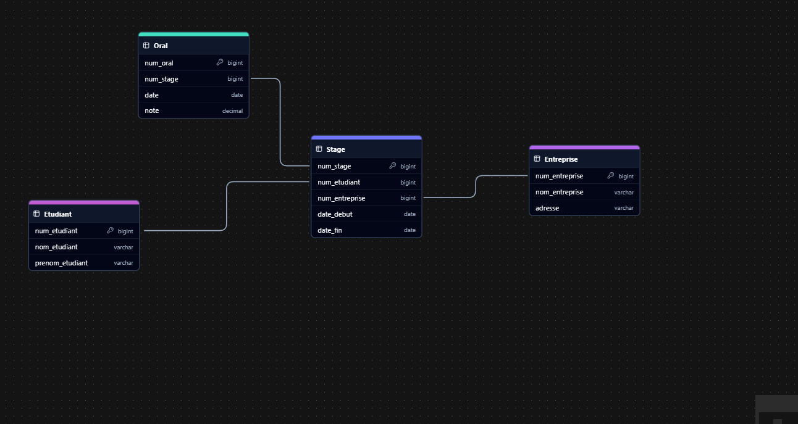

On se propose de créer la base de données qui permettra de gérer les examens oraux en vue de l’obtention du titre de développeur Web et mobile.
Des travaux initiaux ont permis d’aboutir à la construction du schéma relationnel suivant :
- Etudiant (num_etudiant, nom_etudiant, prenom_etudiant)
- Stage ( num_stage, num_etudiant, num_entreprise, date_debut, date_fin)
- Entreprise (num_entreprise, nom_entreprise, adresse)
- Oral (num_oral, num_stage, date, note)
- Quelles sont les clés primaires et les clés étrangères pour chaque relation ? Existe-t-il des clés alternatives ?
- Construisez grâce aux éléments en votre possession le graphe des dépendances fonctionnelles existant entre tous les attributs de cette BdD
-
Clés primaires:
- num_etudiant (Etudiant)
- num_stage (Stage)
- num_entreprise (Entreprise)
- num_oral (Oral)
-
Clés étrangères:
- num_etudiant (Stage)
- num_entreprise (Stage)
- num_stage (Oral)
- Clés alternatives n'existent pas. Pas des autres clés uniques.
